Iceland Trip 2024
Alex Bock 2024-09-02
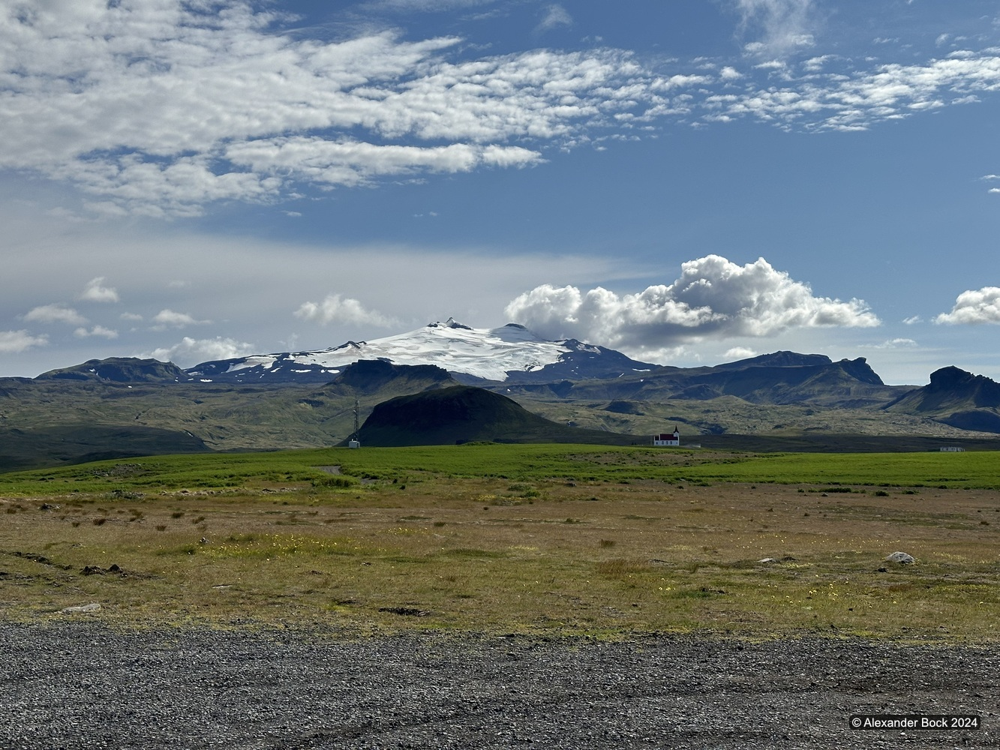
Overview
I took a short trip to Iceland in early August to explore the ring road blindly without researching or planning destinations to visit in advance.
Flight
While early August is not an optimal time to see the northern lights in Iceland, I unexpectedly got a good view of them from the plane while the overnight flight was crossing northern Canada:
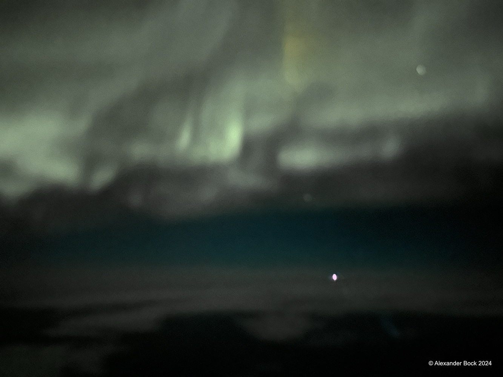
In the morning, this was replaced by an aerial view of Greenland:
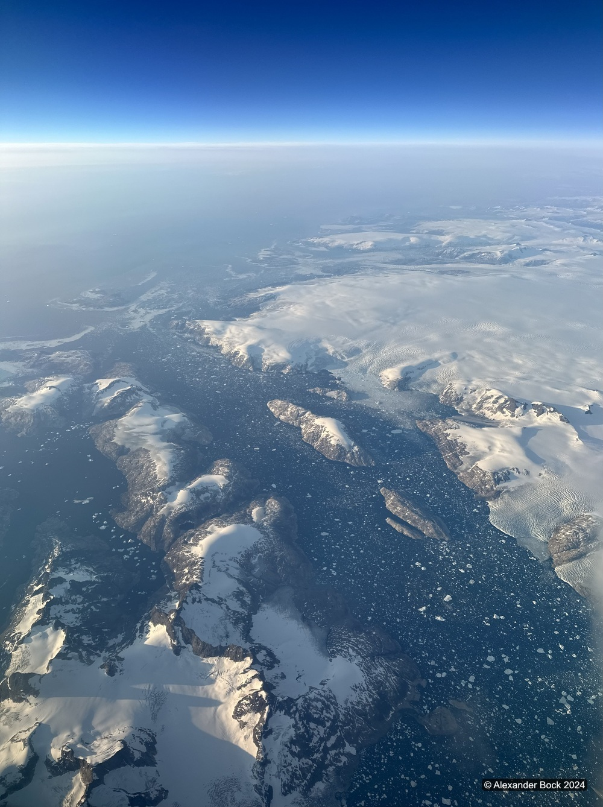
Interestingly, international flights to Iceland arrive at Keflavík rather than Reykjavík. After picking up a rental car near the Keflavík airport, it was about a 40 minute drive to Reykjavík.
Þingvellir
The first obvious stop near Reykjavík was Þingvellir National Park which had amazing rocky scenery and the first of many large waterfalls I encountered in Iceland, Öxarárfoss:
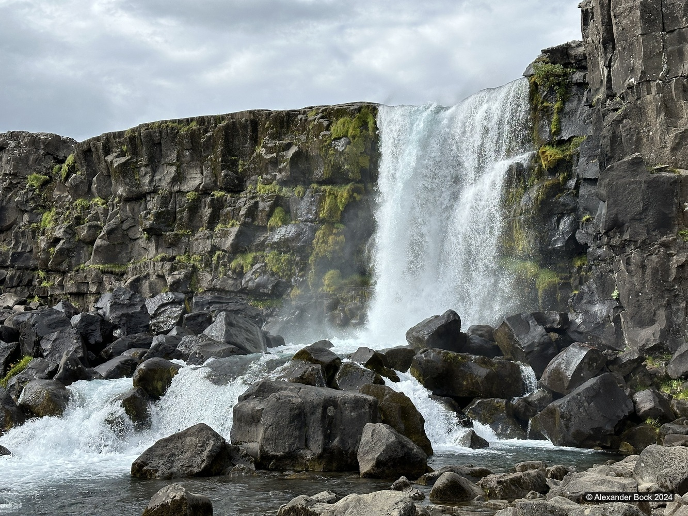
Seljalandsfoss
Driving east from Reykjavík, I saw this amazing waterfall in the distance and turned off the highway to find access to it. Stopping at the sight of anything that looked interesting along the ring road proved quite fruitful in Iceland, as this beautiful waterfall had a path through a shallow cave behind it and was surrounded by grazing sheep:
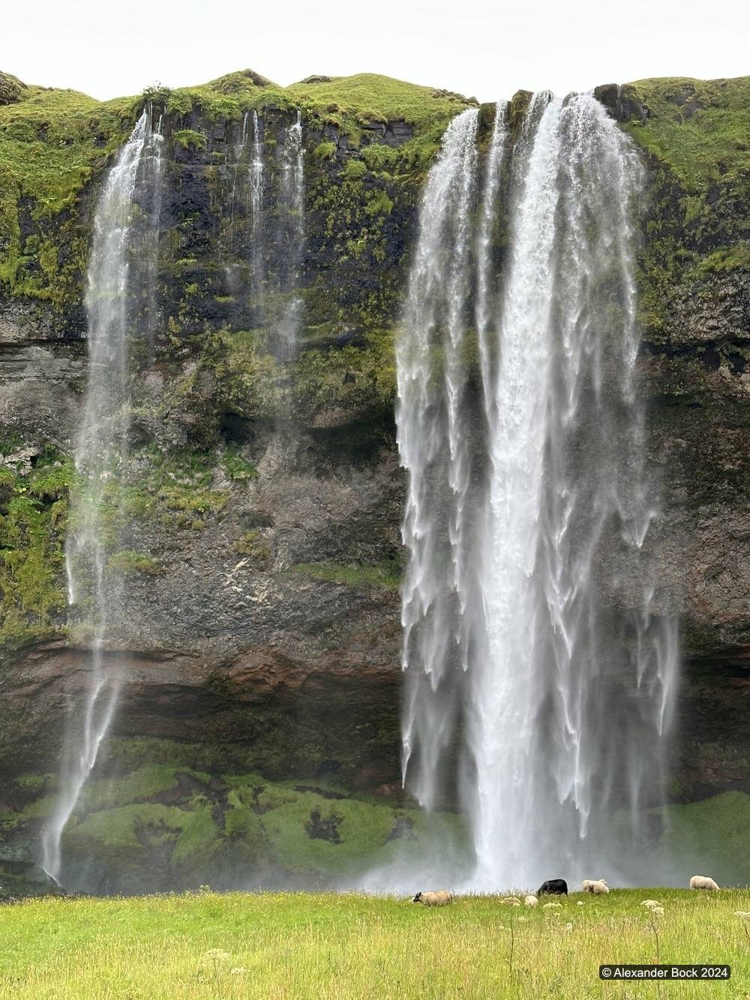
Skaftafell
Continuing east to Skaftafell, I took short hikes to the Skaftafellsjökull glacier and the Svartifoss waterfall:
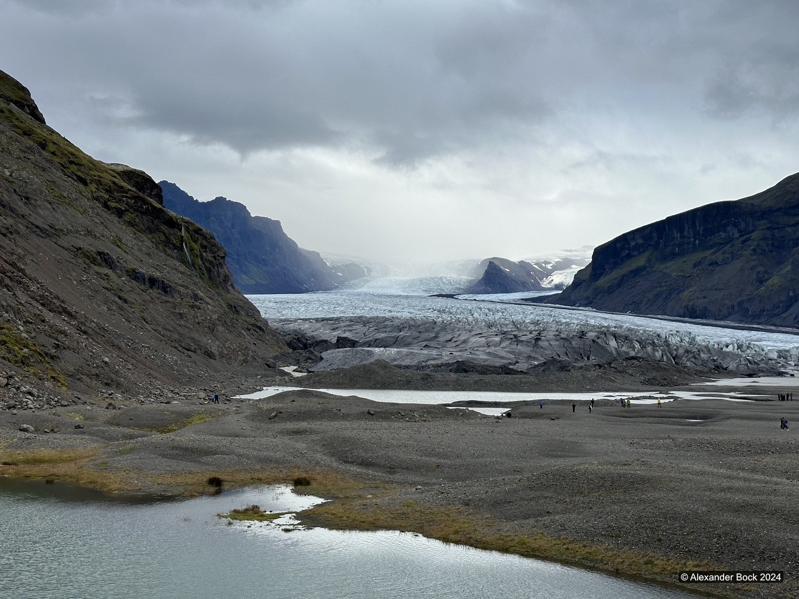
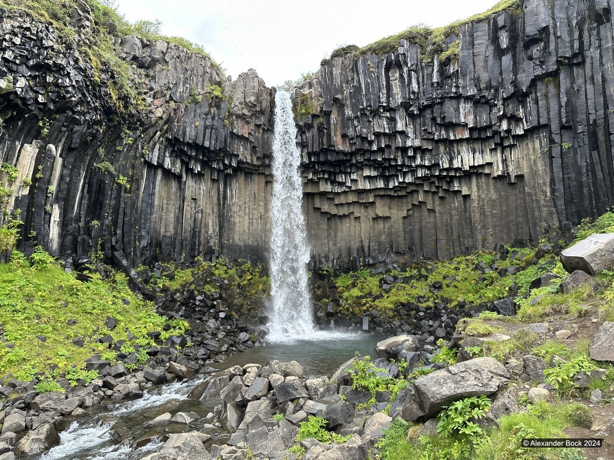
I continued the trail past Svartifoss into a longer 17 mile loop hike which provided excellent views around Kristínartindar:
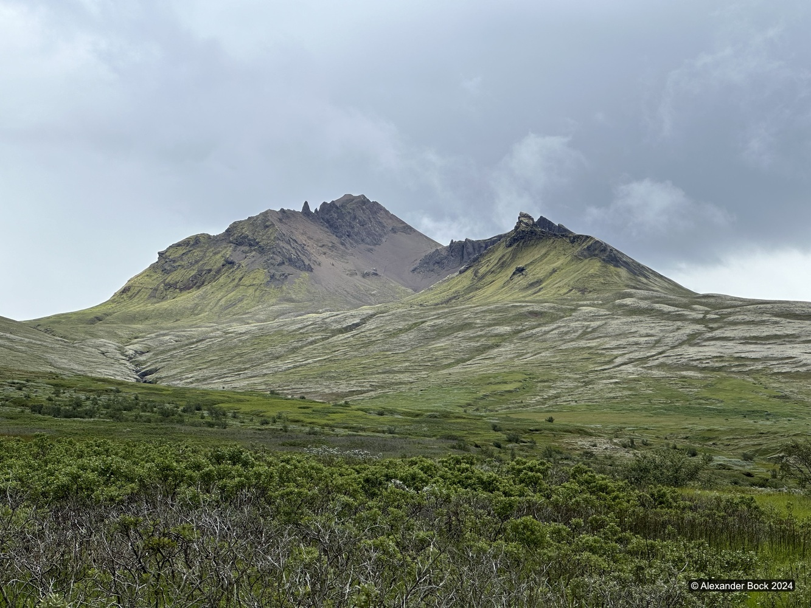
Kerið
Looking for destinations while heading back towards Reykjavík, Kerið lake was a vibrant stop:
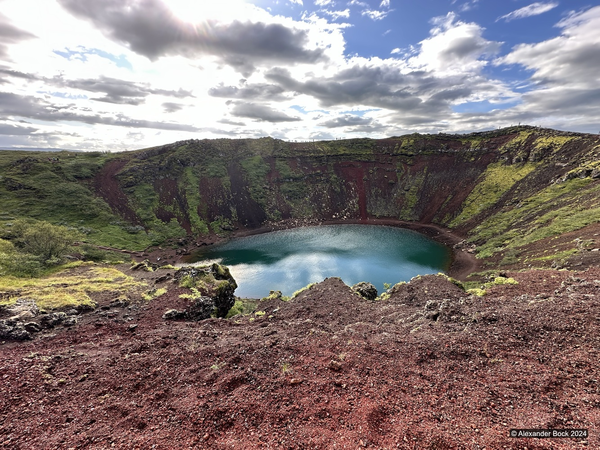
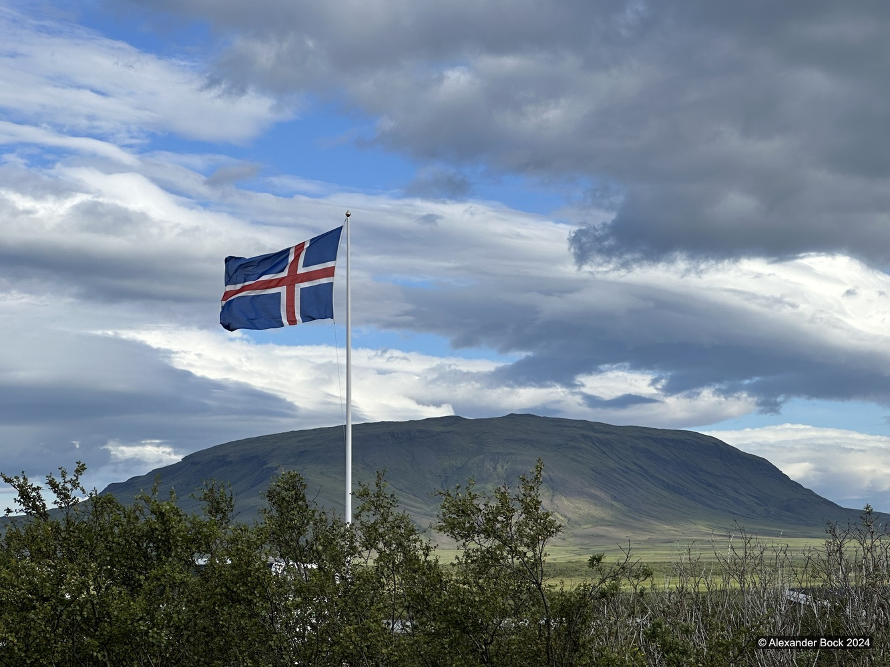
Kirkjufell
Finally branching out west from Reyjkavík, Kirkjufell loomed over the road after circling Snæfellsjökull:
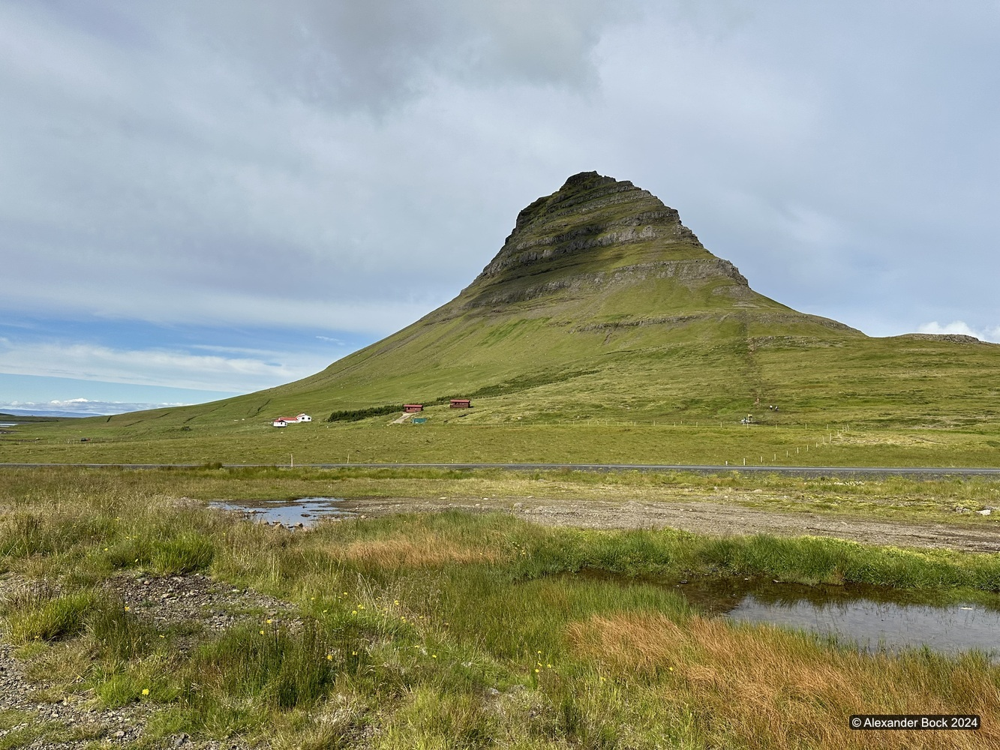
I stopped for a strenuous hike to the top and found incredible views of the surrounding scenery and nearby Grundarfjǒrður:
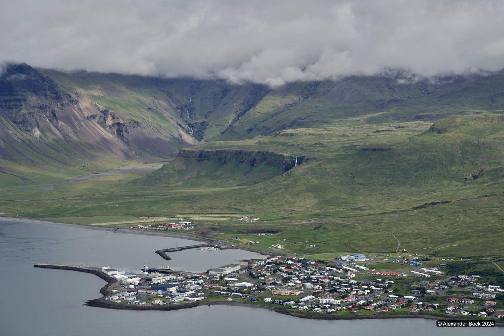
Back to Index